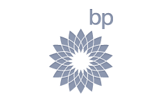
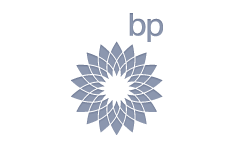

{kind=link}


The Key To Success - Our Process
Introduction
Our process has been engineered to ensure it focuses on all stakeholders needs and ensures they feel a part of the collaboration team.
Methodologies
Using full-cycle development means everyone takes responsibility for the project. Starting with idea elaboration, system specifications and user experience design we follow the latest industry standards and practices to guarantee that our clients get something unique and effective. Something that grows their business and brings it to a whole new level.
Agile
We utilise Agile methodologies to optimise team efficiency to ensure communication, staffing, resource
assignment and reporting are all completed effectively.
 


Continuous Integration
Modern applications and software needs updating and tweaking to adapt to the ever changing environment. Because integration takes place so frequently, in continuous integration there is significantly less back-tracking to discover where things went wrong, so you can spend more time building features.
If we didn't follow a continuous approach, we would have longer periods between integrations this would make it exponentially more difficult to find and fix problems. Such integration problems can easily knock a project off-schedule, or cause it to fail altogether.
Quality Assurance
Our Quality Assurance team carries out intense tests on each project from the beginning to ensure that the solution works smoothly, looks simple yet intuitively meets all the specified and agreed requirements.


Multi-level Support
Our support services include consulting, defect analysis, trouble-shooting, bug fixing, application administration, regular backups, system availability monitoring and others; we can even work with your customers directly.